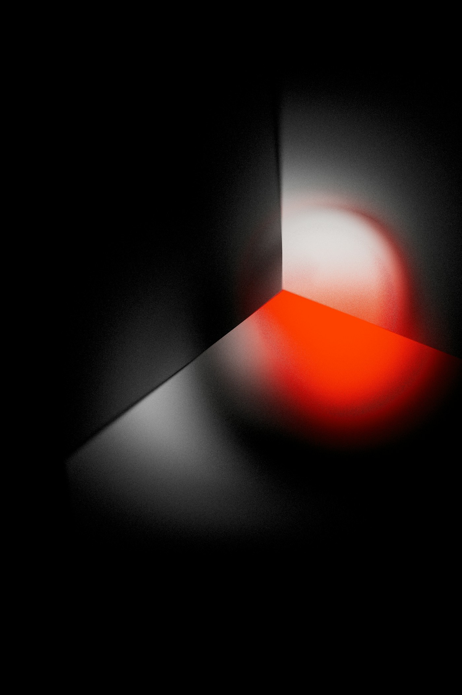

AI・AGI・アラインメントをめぐる思考を、便利さと脅威の二項対立から引き剥がして整理するための場所。138億年の宇宙進化史の中で知能という現象がどう位置づけられるか、超知能時代に人間と機械がどう共創するか、といった問いを、短絡しない速度で言語化していく。
ここにある記事は完成品ではない。考えの途中経過を、後から読み返せる形で留めておくための断章である。
AIは人間の仕事を代替している。それも急速に。
企業が公式に発表した人員削減ニュースを追う。
米欧・中華の最前線モデル30本と、METR・Apollo・Epoch AIなど評価機関の現在地。
ランキング、ベンチマーク比較、リリースタイムライン、MLArena Eloを一望する。
AGIをめぐる議論は広い。知能の本質、技術的経路、アラインメント、リスク、ガバナンス、経済、倫理、地政学、ポストAGI。11のドメインに55のトピックを整理し、論点の全体像を一望する。
同じ「AI」を語っていても、見えている風景はまるで違う。
7つの関門が、あなたの深度を可視化する。
四部作の完結編。残された B-2 象限——肉体も人間パラメータも捨て、別存在へ遷移する——を掘る。倫理は適用できないのではない、倫理という言葉がそもそも立ち上がらない。Nagel の客観性論、Parfit の心理的連続性論、仏教の無我と工学的な無我の決定的な差。視界から消えたのではなく、視界という概念から逸脱した別れについて。
Read Article →四部作の第三章。A-2象限——肉体は保つが認知を書き換える——を掘る。痛みの削除、嫉妬の消去、郷愁の除去。書換の決定に、書換後の自分の同意は存在しない。Parfit の人格同一性論、Elsterの Ulysses pact、そして lobotomy・SSRIs・DBS の半世紀。扉を開けたのは、もうそこにいない私だ。
箱庭三部作の締め。倫理の七割はリソース配分問題に翻訳できる。だが約束、人を手段として扱うこと、エビ福祉$1=人間285人、そして石を一つずらすかどうか——配分計算が触れない層は確かに残る。AGI時代、倫理は権限アーキテクチャと存在への敬意の二方向に分岐し、マルチバース規模の拡張ガイアとして再構成される。
No.19の続編。消されるかペット化されるかの二択ではない、トランスヒューマン化という第三の道。外側のない檻の美しさは、どう計測できるか。
全員に世界が配給される思想は、配給される側しか見ていない。コスト選別、拒否者、主語なき者——三類型の外部はNozickのメタ・ユートピアが隠した参加自発性の前提を崩す。歴史上はじめて、外部は物理的に見えない形で生まれる。
ユートピアとディストピアは極限で同じ像を結ぶ。社会主義を砕いたのは思想ではなく物資の量だった。配分対象を物質からシミュレートされた世界に切り替えるとき、思想史は折りたたまれ、豊かさを感じる最後の主語が静かに外される。
SNSはすでにミニ・バーサーカーだ。悪意ではなく最適化が効きすぎているから止まらない。競争・数学・論理・宇宙統計の4層が押しつける均衡解としてのASIを、L5シリンダー100万個というローカルテストで観測可能な形に引き下ろす。
ラインを30年設計してきた熟練者が「絶対ない」と言う。その直感は1995-2020の横ばいを線形外挿している。2022-2025のVLA基盤モデル、PilbaraのAHS 48億トン、$500のLiDAR。「絶対ない」は過去4回、同じ理由で外れてきた。
Yudkowskyの不可能論も加速派の楽観論も、同じDescartes-Wienerの制御概念の上に立っている。道家の無為、龍樹の縁起、西田幾多郎の場所論を、神秘主義ではなく設計原理として読み替えると、制御以前の秩序という別の問題が立ち上がる。
1956年にAshbyが定式化した一本の不等式が、現代アラインメント論の前提を崩す。Bateson、Maturana/Varela、Luhmannを通じて、解像度仮説の天井を読み直し、制御でも理解でもない第三の道を問う。
べき乗則の発見が巨大モデル競争を引き起こし、データと電力の壁が立ちはだかった。スケーリングは死んだのか。テスト時計算、合成データ、エージェント。壁に見えたものは、実は3本の迂回路への分岐点だった。
なぜ人々はAGIの時間軸を過小評価するのか。認知ギャップへの4つの対応類型、減災という発想、ナラティブ設計、先行共同体の3機能。
進化とは複雑化ではない。自由エネルギー勾配のもとで一時的に秩序を組み上げ、可制御性を高める運動である。プリゴジンの散逸構造論からAGIの作動原理までを、熱力学の枠組みで一本に繋ぐ。

AGIを作らない者がAGIを語るとは何をしているのか。ナラティブの4機能、5層のメタ構造、語る者の4つの役割と失敗モード。Jasanoff、Shiller、Beckert、Arendtを参照しながら、語る行為そのものの責任と限界を解剖する。

Jonesの経済成長モデルでは、タスク自動化率30%+高い生産性倍率で高度成長級の変化が始まる。ホワイトカラーのAI完全代替とブルーカラーのAR/AI支援を合算すれば、ロボット閉ループの成立を待たずに閾値に到達する経路が開かれている。

Anthropic、OpenAI、DeepMind、Meta、MIRI、ARC、CAIS、Redwood Research。全員が「alignment」を語るが、解こうとしている問題が違う。企業の安全性チーム、独立研究機関、アカデミア、そして資金の流れから、同床異夢の布陣図を描く。

L0からL6まで、意思決定の所在を軸に企業組織の変形を追う。L4とL5のあいだに現れる垂直な崖は水の沸点と同じ相転移であり、古典的ストラテジストの5機能のうち人間に残るのは目的関数設定だけだ。

AIがAIを改良するループの先に語られる「産業爆発」は、ロボットがロボットを作る自己複製という一つの前提に賭けている。倍増時間、物理ボトルネック、カルダシェフ・スケールへの接近までを辿る。

ForethoughtとEpoch AIの定量分析を起点に、AIがAIを改良するフィードバックループと、ロボットがロボットを作る自己複製のループを辿る。10年で100年分の進歩、倍増時間の短縮、カルダシェフ・スケールへの接近。

2023年の各国政府声明は突然の合意ではない。1991年のExtropian Institute、1996年に17歳のYudkowskyと大学院生のBostromが加わったメーリングリスト、2002年の覚醒、効果的利他主義との合流、そしてDeepMind・OpenAI・Anthropicの創設まで。30年の系譜を一本の線で辿る。

AGI以降の変化速度について、Yudkowskyは数日、Epoch AIは10年と見る。同じ事実を見ていながら3桁の開きが生じる理由を、代替の弾力性という一論点から解剖し、速度とp(doom)の相関を辿る。

Specification Gaming、Goal Misgeneralization、道具的収束と直交仮説、欺瞞的アライメント、Mind Design Space。誤整合の内部機序を5つの概念で解像し、アラインメント研究の前線がなぜ表層の対処では届かない層に向かうのかを辿る。

開発停止は現実的な選択肢にならない。Compute Governance、情報セキュリティ、国際協力、d/acc、バイオセキュリティ、深層防護、民意のAIへの反映。地雷原を抜けるゲームの設計図を7つのレバーで辿る。
AGI HUBは、知能・アラインメント・文明の次相に関する思考を蓄積する個人アーカイブである。完成したレポートを公開する場ではなく、考えの途中を記録して後から参照できるようにするためのもの。モノトーンのエディトリアルデザインで、読み物としての集中を優先している。
扱うテーマは、AGIを宇宙進化の文脈でどう位置づけるか、アラインメント問題をどう再定義するか、共創層の議論をどう言語化するか、といった領域。破滅論と楽観論の両方から距離を取り、第三の視座を探す。